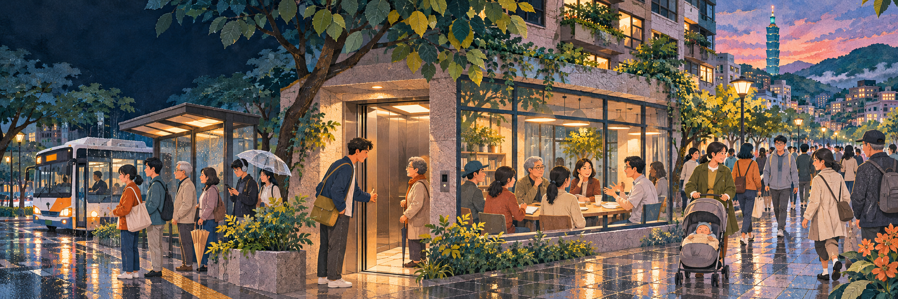

01家裡 · 聽與說
飯桌邊的話，
還沒有說完。
你的故事已經等不及了，家人也正說到一半。

拖動街景，或用箭頭慢慢走
先不用急著答對
它比較像是：我看見你也在這裡。
在家裡、在路上、在一句話之間，
我們都能找到一種讓彼此舒服一點的方式。
點選一個小場景，看看不同選擇帶來什麼回音。
沒有標準答案；可以試著感受，也可以重新選。
走進四個熟悉的瞬間
看見一個人、聽見一句話，
故事就從這裡開始。
你的故事已經等不及了，家人也正說到一半。
有人下車，也有人趕著上車。你注意到什麼？
玩具散在地上；換活動以前，可以先問一聲。
把聲音放輕一點，把注意力放回對話裡。
一個小小的停頓
有時候，是等對方先走；有時候，是把自己的需要說清楚。
禮貌不是把自己縮小，而是一起找一個放得下彼此的位置。
再想一想
×它讓誰更自在？
有沒有人被擠到外面？
排隊、輪流、說話音量，的確能讓日常更順一些。但捷運月台研究也提醒：動線交會與空間安排，會影響旅客的衝突與延滯；有些習慣則可能被「大家都這樣」和旁人的眼光留住。
所以，新的有禮貌運動，不只練習替人留一點空間，也願意回頭看看：這個空間，能不能讓更多人一起自在？
新一代「有禮貌運動」
選一句帶回日常。不用打卡，也不用交作業。
每一次重新開始，都算數。
靈感與資料線索
這些資料提供了不同的視角：日常禮儀、共同規則，也包括對規則本身的提問。
家庭與公共空間裡的相處，也可以成為國小一、二年級生活課程從生活經驗出發的探索起點。一起看時，可以先請孩子說說看見了誰、發生了什麼，再問「如果換成你，會有什麼感覺？」不用急著給答案。這個互動故事借用課綱重視的探索、互動與省思，不把它做成測驗或背誦。
不同文化、不同情境，做法可能不同。手冊裡的部分禮俗屬特定時代與場合的慣例；這裡保留的是理解情境、清楚聆聽、留意他人的方向，不把性別、年齡或職位排序當成唯一答案。